Halo, Saya
Ahnaf Chaisar Akbar
Suka koding, ekplorasi AI, dan ngobrolin solusi teknis! Sebagai lulusan IT yang aktif dan komunikatif, saya memadukan keahlian Full-Stack (PHP/Laravel) dan Manajemen Data untuk bantu menyelesaikan berbagai tantangan teknologi. Let’s build something awesome together!

Ahnaf Chaisar Akbar
Web Developer & IT Support

Aktivitas Kampus
Dinamis & Kolaboratif

Aktivitas Non Formal
Pengembangan Diri & Relasi

Dokumentasi Santai
Kreatif & Energik

Kebersamaan
Etos Kerja & Integritas
Pendidikan & Keahlian Utama
Kombinasi latar belakang akademik berprestasi di Sistem Informasi dengan pengalaman praktis di dunia industri dan komputasi.
Fokus studi mencakup Analisis & Perancangan Sistem, Basis Data Relasional, Rekayasa Perangkat Lunak Web, Sistem Pendukung Keputusan (SPK), Data Mining, dan Tata Kelola Teknologi Informasi.
Dokumentasi Akademik & Kelulusan
Momen kelulusan bersama pimpinan universitas dan fakultas:


Ringkasan Keahlian & Tech Stack
Teknologi dan perangkat lunak yang saya gunakan untuk membangun solusi web, automasi data, dan manajemen operasional:
Pengalaman Kerja & Magang
Rekam jejak profesional dalam administrasi bisnis, tata kelola data, dan operasional IT industri telekomunikasi.
Administrator
- Menyusun dan mengelola laporan pemeliharaan serta pemasangan periklanan secara berkala dengan presisi tinggi menggunakan Microsoft Excel dan Microsoft Word.
- Membuat faktur pajak secara tertib serta mengelola pengarsipan dokumen resmi dan korespondensi surat-menyurat perusahaan untuk menjamin transparansi akuntansi & legalitas operasional.
- Melakukan koordinasi dengan tim teknis lapangan terkait jadwal monitoring titik-titik media periklanan luar ruang (outdoor advertising).
IT & Operational Intern
- Mengelola dan merekapitulasi data operasional proyek pada platform enterprise manajemen proyek Telkom yaitu TOMPS.
- Merancang materi visual, infografis presentasi, dan kebutuhan grafis operasional harian menggunakan Adobe Photoshop.
- Menyusun laporan pengecekan berkala dan melakukan verifikasi integritas data teknis sebelum dilaporkan kepada supervisor operasional.
Proyek Unggulan
Kumpulan aplikasi web dan implementasi sistem yang telah saya rancang dan bangun secara tuntas.

Website E-Commerce Rekomendasi Paket Pernikahan Menggunakan MARCOS
Sistem e-commerce komprehensif yang mengimplementasikan Sistem Pendukung Keputusan (SPK) metode MARCOS (Measurement of Alternatives and Ranking according to COmpromise Solution) untuk memberikan rekomendasi paket pernikahan terbaik berdasarkan preferensi kriteria dan batas anggaran pengguna secara objektif.
Model Decision Tree C5.0 Untuk Penilaian Lokasi Pemasangan Media Iklan
Penerapan algoritma Data Mining Decision Tree C5.0 untuk mengolah atribut spasial, kepadatan lalu lintas, dan visibilitas guna menilai kelayakan lokasi terbaik pemasangan media periklanan billboard komersial secara akurat.

Sistem Informasi Data Bantuan Desa
Aplikasi web pengelolaan dan pendataan penerima bantuan sosial di tingkat desa yang dirancang untuk memastikan penyaluran bantuan tepat sasaran, transparan, serta memudahkan proses pencarian dan pelaporan data warga.

Prediksi Ketersediaan Stok LPG Menggunakan Algoritma C4.5
Model klasifikasi dan estimasi ketersediaan serta kebutuhan stok tabung gas LPG pangkalan dengan algoritma C4.5 untuk meminimalisasi risiko kelangkaan pasokan tabung gas bagi masyarakat.
Sertifikasi & Pelatihan
Daftar 13 sertifikat pelatihan, konferensi internasional, dan seminar resmi yang telah diselesaikan. Klik pada sertifikat untuk melihat berkas resolusi tinggi.
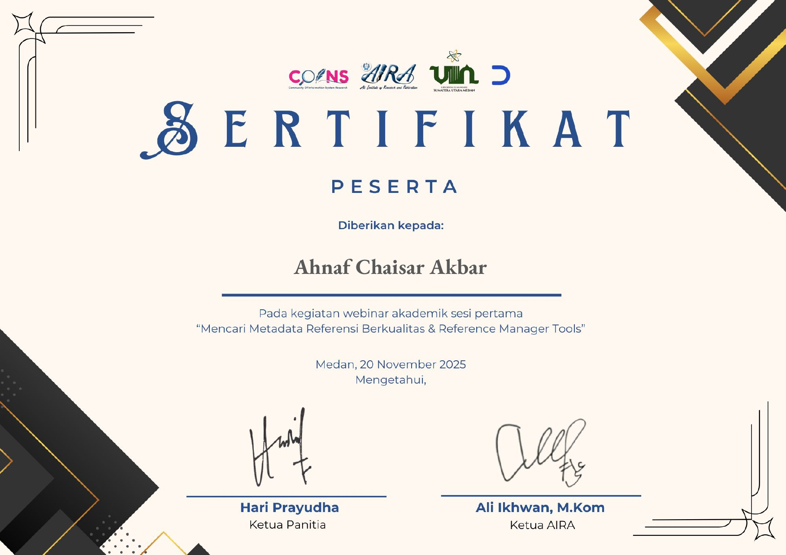
Webinar: Mencari Metadata Referensi Berkualitas & Reference Manager Tools
COINS & AIRA UINSU
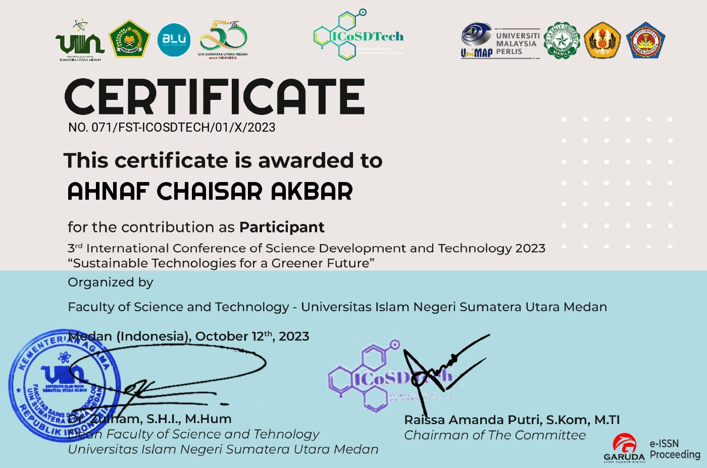
Certificate of Participant: 3rd International Conference of Science Development and Technology (ICoSDTech)
UINSU
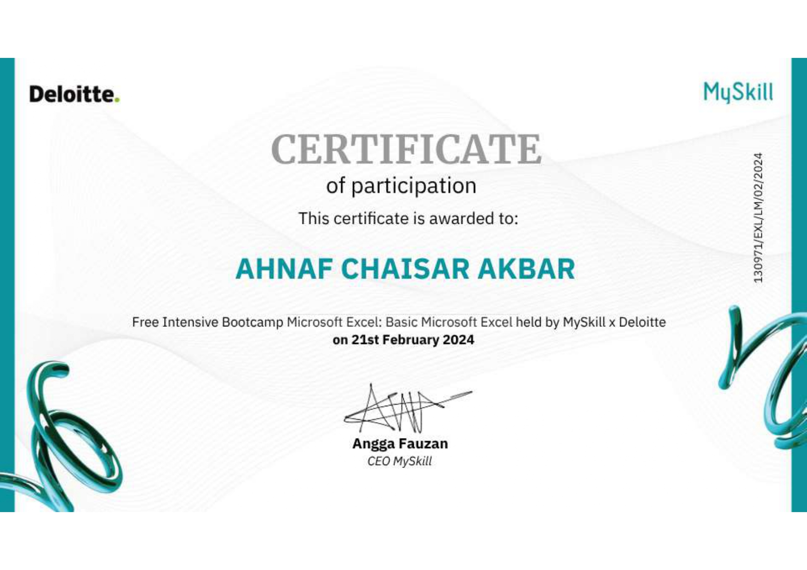
Bootcamp: Basic Microsoft Excel
MySkill x Deloitte
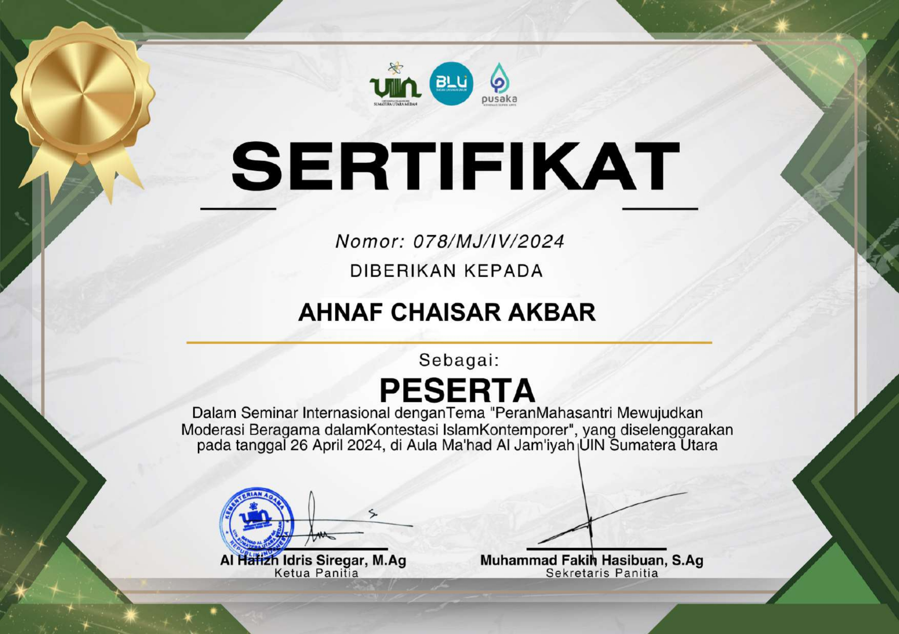
Seminar Internasional: Peran Mahasantri Mewujudkan Moderasi Beragama
UINSU
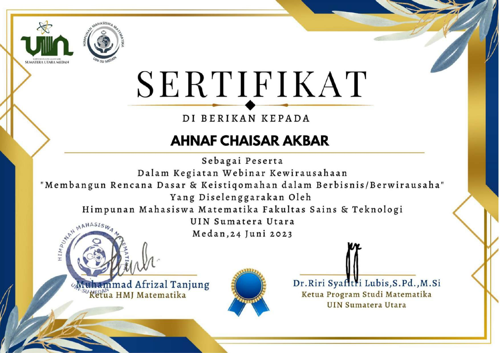
Webinar Kewirausahaan: Membangun Rencana Dasar & Keistiqomahan Bisnis
HMJ Matematika UINSU
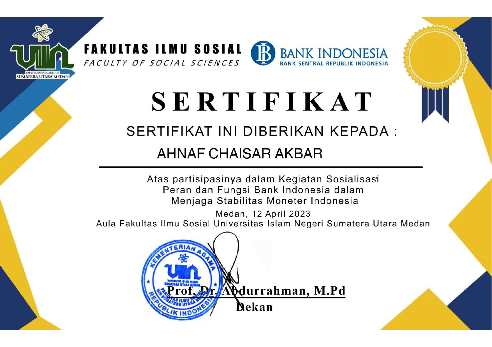
Sosialisasi: Peran dan Fungsi Bank Indonesia dalam Stabilitas Moneter
FIS UINSU x Bank Indonesia
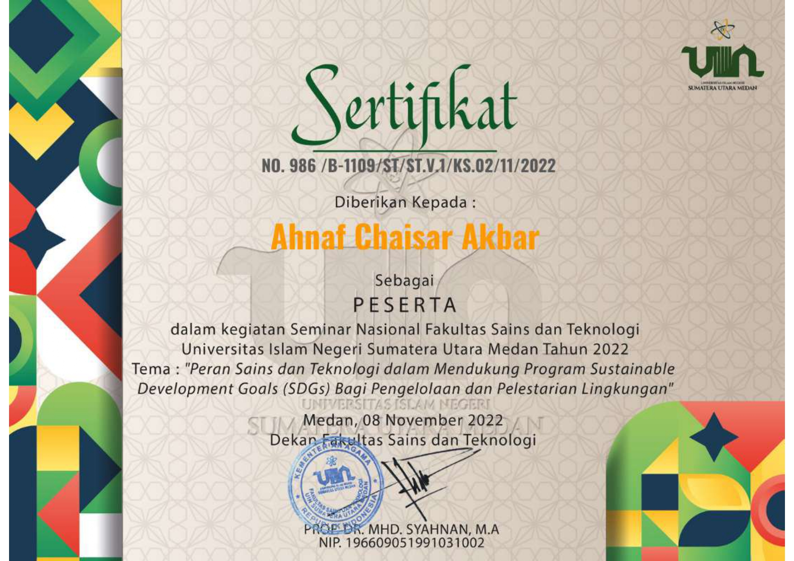
Seminar Nasional: Peran Sains & Teknologi dalam SDGs Lingkungan
FST UINSU
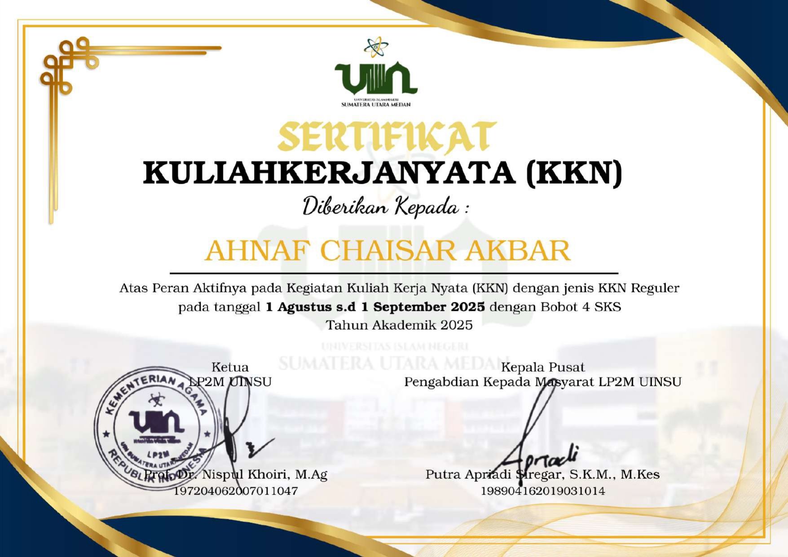
Sertifikat Kuliah Kerja Nyata (KKN) Reguler 4 SKS
LP2M UINSU
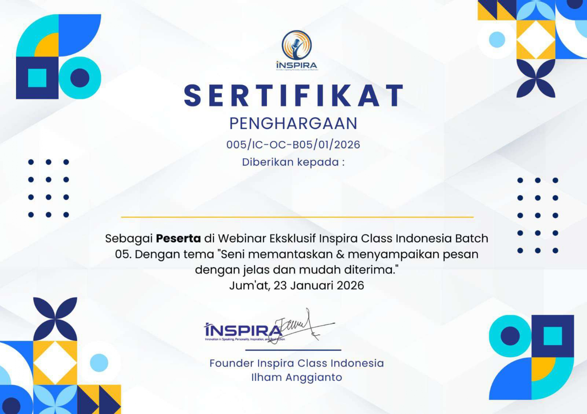
Webinar Inspira Class: Seni Memantaskan & Menyampaikan Pesan
Inspira Class Indonesia
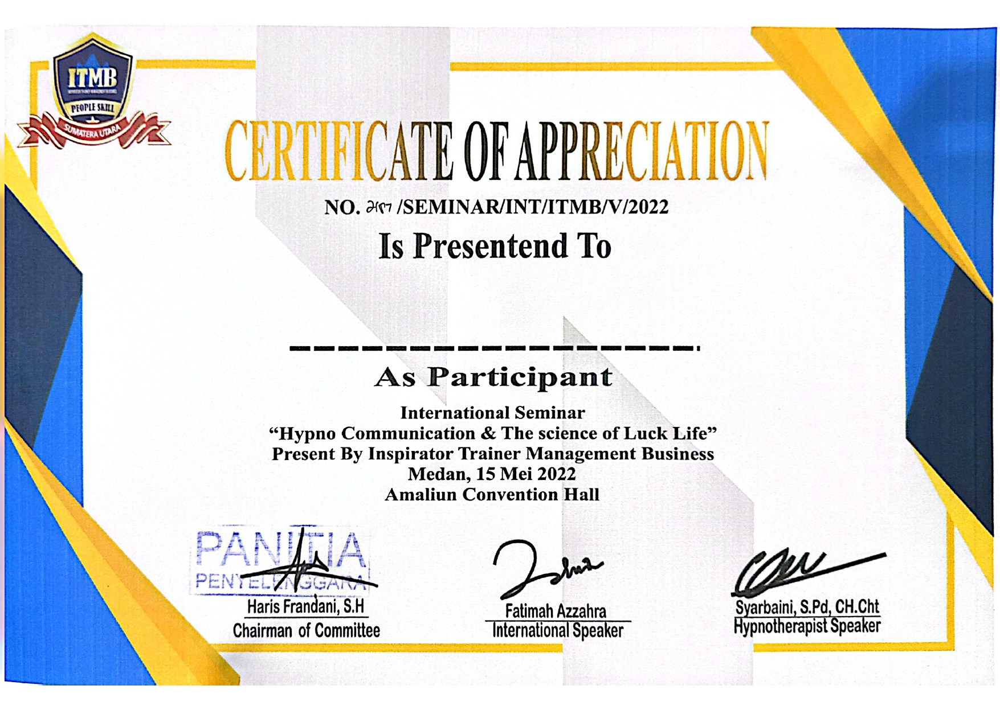
International Seminar: Hypno Communication & The Science of Luck Life
ITMB
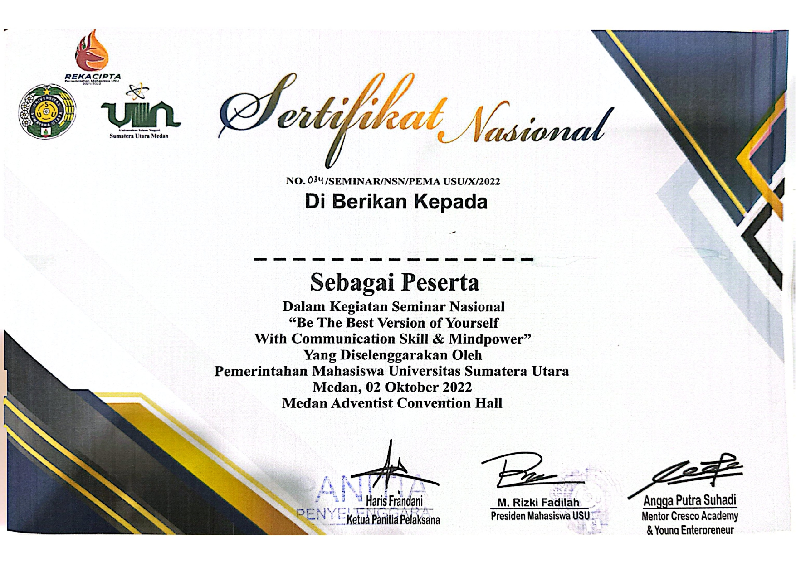
Seminar Nasional: Communication Skill & Mindpower
PEMA Universitas Sumatera Utara
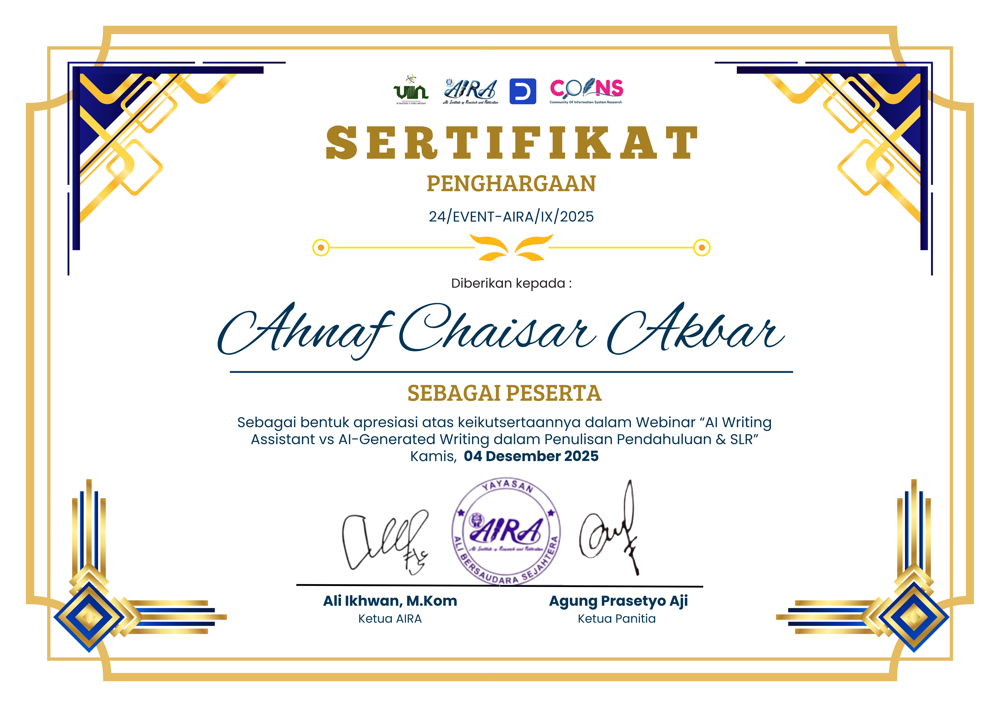
Webinar AIRA & COINS: AI Writing Assistant vs AI-Generated Writing
UINSU
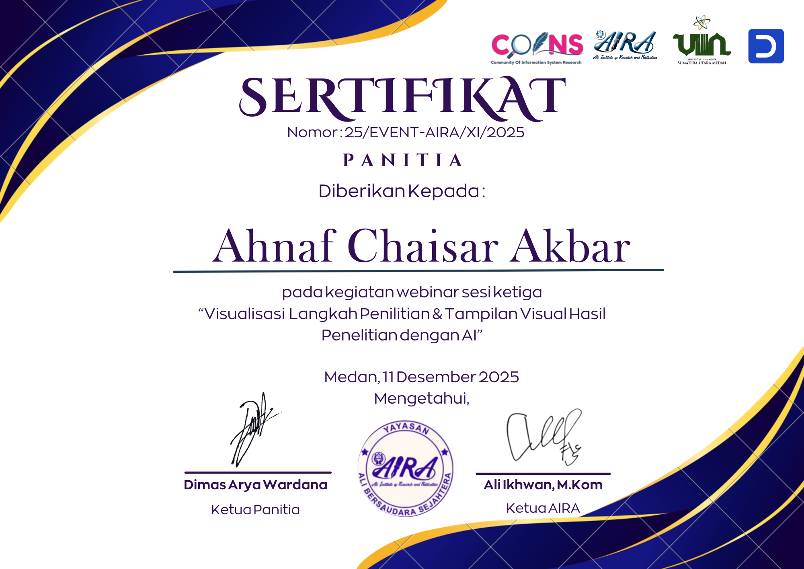
Webinar AIRA & COINS (Sertifikat Panitia): Visualisasi Hasil Penelitian dengan AI
UINSU
Galeri Foto Personal
Potret kegiatan, dinamika perkuliahan, dan aktivitas non-formal yang mencerminkan etos kerja dinamis dan kolaboratif.

Hubungi Saya
Tertarik merekrut atau mendiskusikan peluang proyek web dan operasional IT? Jangan ragu untuk mengirimkan pesan!
Kirim Pesan Langsung
Pesan yang Anda ketik dapat langsung diteruskan ke WhatsApp atau Email dengan satu klik praktis: